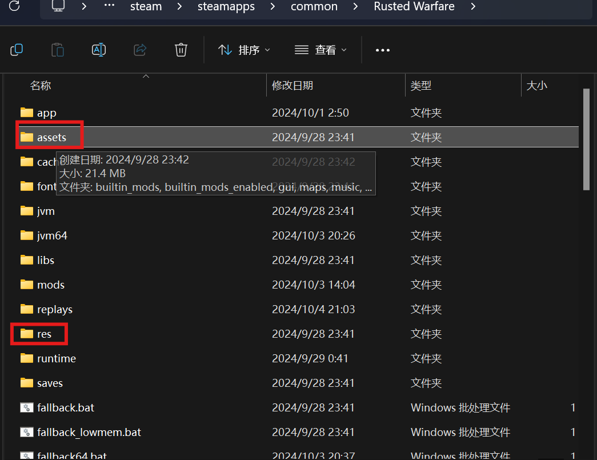
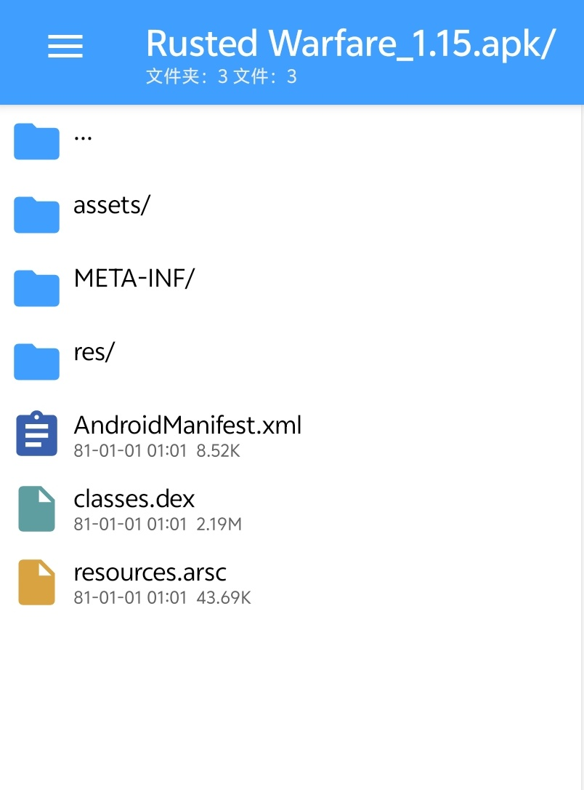
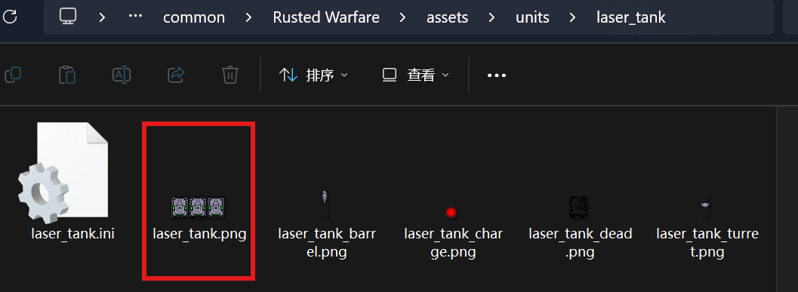

如何使用和制作一个资源包
前言
资源包是在与原版兼容的情况下，可用于修改原版游戏内的贴图，特效，音效和音乐等的美化工具
如何使用一个资源包
- 如果是Windows用户，在你的RW根目录中创建
resource文件夹，将资源包（.rwres）放入其中即可 - 如果是Android用户，需要确保已经在设置中给予管理所有文件权限，然后在你的RW根目录下(通常为
/storage/emulated/0/rustedWarfare/)创建resource文件夹，然后放入即可
错误处理
若资源包导致了RWPP无法打开，请在你的RW根目录删除resource_generated的文件夹
如何制作一个资源包？
准备
资源包的本质是对已有的资源进行同名替换
因此，你需要知晓RW的资源结构，可以使用MT管理器解包，或者在PC端上可以直接获得
PC上包含资源的文件夹： 
Android 安装包下的结构 
结构
资源包可包含以下文件及文件夹
- info.toml
- icon.png
- units/
- tilesets/
- shaders/
- music/
- res/drawable/
- res/raw/
其中info.toml是必须的，它描述了一个资源包的信息
info.toml可包含的内容如下:
name = "xx"
icon = "icon.png" #若留空代表没有
description = """
xxx
""" #显示在resource列表内的介绍
icon.png为显示在resource列表内的图标，可以改为其它名称
操作
以更换激光坦克的贴图为例
新建一个文件夹，用于存放info.toml和一系列资源
在info.toml写入以下内容
name = "激光坦克更改"
icon = ""
description = """
一个简单的资源包
"""
查看上述的结构可知，激光坦克的位置实际位于assets/units/laser_tank/
可以看到laser_tank.png是我们要替换的目标

由此，我们在之前新建的文件夹中创建文件夹units/laser_tank/ 然后我们将要替换的贴图放入该文件夹中，并命名为laser_tank.png
最后我们将我们新建文件夹的所有内容都压缩为.zip，并将其后缀更改为.rwres即可，至此，一个简单的资源包制作完毕
注意：资源包不会检测是否含有
.ini文件，如果包含也会覆盖原版的.ini文件，因此原则上资源包不应该包含.ini文件